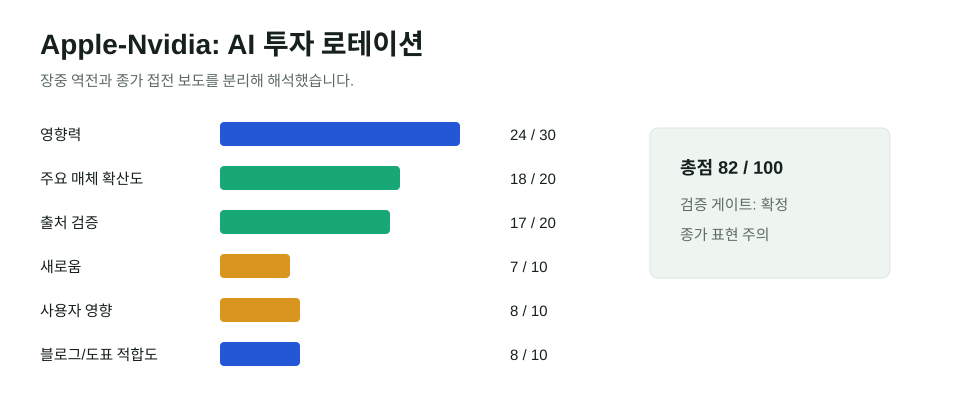

Apple-Nvidia 시총 접전: AI 투자 논리가 칩에서 제품으로 이동했다
Reuters와 Bloomberg 계열 보도는 Apple이 장중 Nvidia를 넘어섰다고 전했고, WSJ는 종가 기준 Nvidia가 근소하게 1위를 지켰다고 보도했다. 결론은 "Apple이 완전히 왕좌를 되찾았다"가 아니라, AI 투자자들이 칩 인프라 독주에서 소비자 제품·서비스 수익화로 시선을 넓히고 있다는 점이다.

핵심 요약
AI 시장은 GPU만 사는 장세에서 수익화 검증 장세로 이동 중이다
Nvidia는 여전히 AI 인프라의 핵심 기업이다. 하지만 Apple이 AI 기능을 기기와 서비스에 얹는 방식으로 재평가받으면서, 시장은 "누가 더 많은 GPU를 파는가"뿐 아니라 "누가 AI를 사용자 지갑에 연결하는가"를 보기 시작했다.
선정 이유
이 뉴스는 주요 경제 매체와 통신사가 강하게 다뤘고, AI 관련 주식 로테이션과 직접 연결된다. Reuters, Guardian, Bloomberg Linea, Al Jazeera는 Apple의 장중 추월을 보도했고, WSJ는 종가 기준 Nvidia가 근소하게 앞섰다고 정정에 가까운 균형점을 제공했다. 날짜와 가격 시점에 따라 표현이 달라지는 사안이므로 본문에서 장중과 종가를 분리했다.
| 항목 | 점수 | 판단 |
|---|---|---|
| 영향력 | 24/30 | AI 반도체, 빅테크, 주식시장 심리 전반에 영향 |
| 일반 주요 매체 확산도 | 18/20 | Reuters, WSJ, Bloomberg, Guardian, Al Jazeera 등 확산 |
| 신뢰도/출처 검증 | 17/20 | 상장사 시장 데이터와 복수 매체 확인. 장중/종가 차이 표시 |
| 새로움/중복 회피 | 7/10 | 기존 Nvidia H200·IBM 지출 글과 다른 투자 로테이션 관점 |
| 사용자 영향 | 8/10 | 한국 반도체, AI 서비스 투자, 포트폴리오 판단과 연결 |
| 블로그·시각화 적합도 | 8/10 | 장중/종가 검증표와 투자 논리 비교에 적합 |
| 총점 | 82/100 | 발행 |
| 검증 항목 | 결과 | 근거 |
|---|---|---|
| 원문 확인 | 확정 | 상장사 주가·시가총액은 공개 시장 데이터 기반 |
| 독립 확인 | 확정 | Reuters, WSJ, Bloomberg 계열, Guardian, Al Jazeera 교차 확인 |
| 전문매체 확인 | 확정 | MarketWatch와 Barron's가 AI 주식 로테이션과 반도체 매도 관점 해석 |
| 반대 확인 | 확정 | WSJ가 종가 기준 Nvidia가 근소하게 앞섰다고 보도해 장중 추월 표현을 제한 |
| 날짜 확인 | 확정 | 사건과 보도는 2026년 7월 17일, 이 글 작성은 한국 시간 7월 18일 |
| 수치 확인 | 부분 확인 | 4.88조/4.86조 달러 등 장중 수치는 매체별 시점 차이가 있어 추세 설명에만 사용 |
| 이해관계 | 표시 | 시장 해석은 애널리스트·투자자 코멘트가 포함됨 |
본문 해설
Nvidia의 강점은 여전히 분명하다. AI 모델 학습과 추론 인프라의 핵심 공급자이고, GPU 생태계는 쉽게 대체되지 않는다. 그러나 시장은 "AI 인프라에 돈이 얼마나 들어가느냐"에서 "그 돈이 어디서 회수되느냐"로 질문을 바꾸고 있다. Apple은 대형 모델을 직접 만들지 않는다는 약점이 있었지만, 25억대 안팎의 기기 기반과 서비스 생태계가 AI 수익화 경로로 다시 평가받고 있다.
이번 접전은 AI 주식이 무너졌다는 뜻도, Nvidia의 경쟁력이 사라졌다는 뜻도 아니다. 오히려 AI 투자 논리가 세분화되고 있다는 신호다. 훈련용 GPU, 메모리, 데이터센터 전력, 온디바이스 AI, 앱 구독, 기업용 에이전트가 각각 다른 수익률과 리스크를 갖기 시작했다. 같은 "AI 수혜주"라도 시장은 이제 비용 구조와 회수 경로를 더 엄격하게 본다.
글로벌 시각 vs 한국 시각
이 모듈을 넣은 이유는 한국 시장이 AI 반도체 밸류체인에 민감하기 때문이다. 글로벌 투자자는 Apple과 Nvidia의 순위 경쟁을 빅테크 리더십 변화로 본다. 한국 독자는 여기에 HBM, 파운드리, 서버 메모리, 모바일 AI 기기 수요를 함께 봐야 한다. AI 투자 로테이션은 한국 반도체 기업에는 위기이면서 기회다.
반대 해석/주의할 점
Apple의 장중 추월을 "완전한 1위 탈환"으로 쓰면 날짜와 시점 혼동이 생긴다. WSJ 보도처럼 종가 기준 Nvidia가 근소하게 앞섰다는 자료도 있다. 따라서 이 글은 순위 확정보다 접전 자체가 보여주는 투자 논리 변화를 중심으로 해석한다.
이미지/표 참고 링크
외부 사진은 사용하지 않았다. 위 SVG는 발행 판단 점수를 직접 시각화했다. 시가총액은 장중·종가 수치가 달라 오해를 줄이기 위해 별도 막대그래프로 만들지 않았다.
저작권 주의사항
Reuters, Bloomberg, WSJ, Guardian 기사와 사진은 재게시하지 않고 링크와 요약만 사용했다. 시장 데이터는 시점에 따라 변동되므로 투자 조언으로 사용해서는 안 된다.
발행 전 확인 포인트
- 장중 역전과 종가 순위를 분리해 표현했는지 확인했다.
- 투자 조언이 아니라 AI 시장 구조 해설로 제한했다.
- 한국 반도체 영향은 추론으로 표시하고 확정적 수익 전망은 쓰지 않았다.